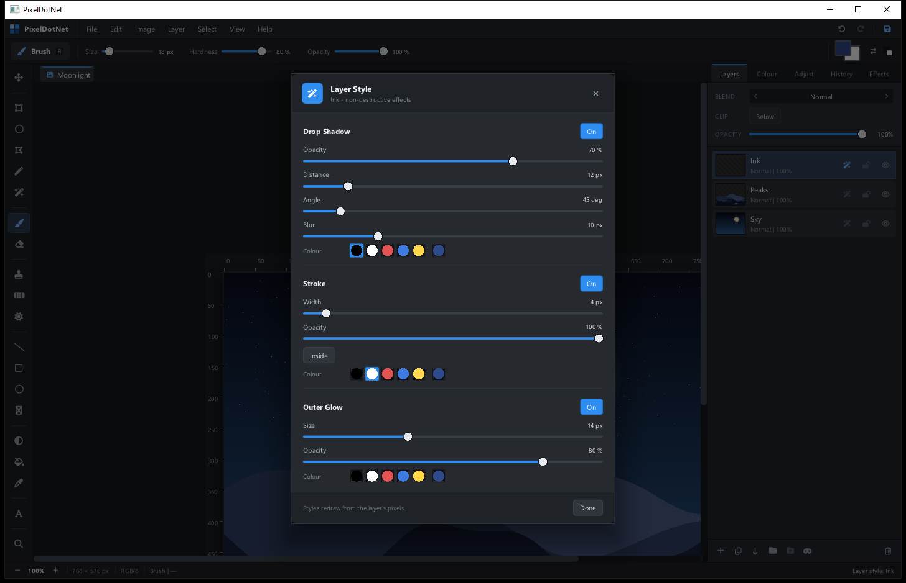
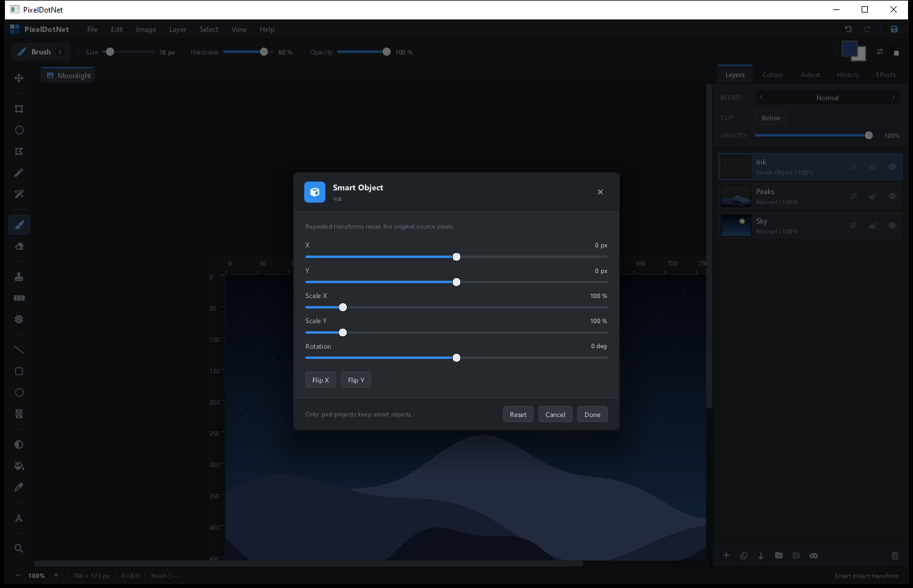
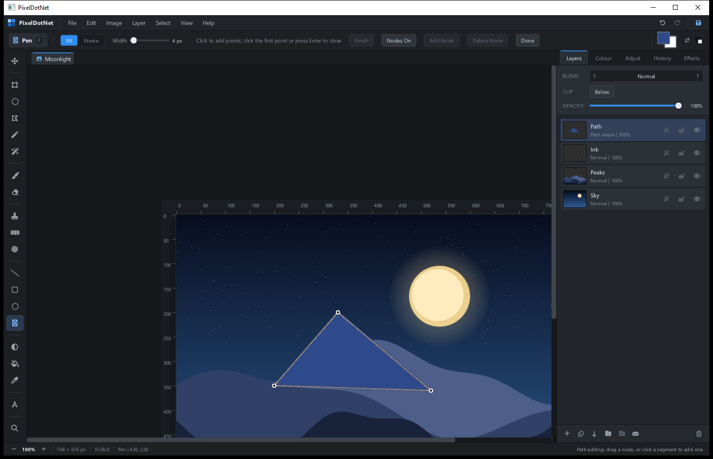

Layers, shapes and text
Layers are the heart of the program. This chapter explains the Layers panel, groups, masks, styles, smart objects, shape layers, paths, and editable text. Take your time here. Almost everything else becomes easier once layers make sense.
The Layers panel
Open the Layers tab on the right side. Layers are listed from top to bottom. The layer at the top of the list is drawn last and appears in front of the others.
Each row shows:
- A small thumbnail of the layer content
- The layer name and a short description, such as Normal, Multiply, or a shape type
- A layer style button, shown as a sparkle icon
- A lock button
- A visibility eye
Above the list are the blend mode picker, the clip control, and the opacity slider. They always apply to the active layer, which is the row highlighted in blue.

Choosing and reordering layers
- Click a layer row to make it active. Painting, effects, adjustments, and layer commands always target the active layer.
- Double-click the layer name to rename it. A clear name such as "Sky", "Line art", or "Shadows" is much easier to work with than "Layer 4".
- Drag a row up or down to reorder it. A horizontal insertion line shows where it will land.
- Drop a layer onto a group header to move it into that group.
- Right-click a layer, a group, or empty space in the list for a context menu with the same actions as the Layer menu.
Opacity and blend modes
Opacity fades the active layer from fully visible to fully invisible. The percentage is shown next to the slider.
Blend mode changes how the layer mixes with the layers below. The available modes are:
| Mode | What it does | Good for |
|---|---|---|
| Normal | Covers the layers below normally. | Everyday painting and text. |
| Multiply | Darkens by multiplying the colours. | Shadows, line art, and tinting. |
| Screen | Lightens by combining the colours. | Glows, highlights, and light leaks. |
| Overlay | Multiplies darks and screens lights. | Contrast and texture layers. |
| Darken | Keeps the darker of the two colours. | Removing light areas from a texture. |
| Lighten | Keeps the lighter of the two colours. | Removing dark areas from a texture. |
| Linear Dodge | Adds the colours together and clips. | Bright glows and sparks. |
Clip restricts the layer to the visible pixels of the layer directly below it. See Clipping a layer for a full explanation.
Lock and visibility
- Lock prevents painting, fills, effects, adjustments, and moves on that layer. It is useful for finishing an element and then working around it.
- Visibility hides the layer from the canvas and from Copy Merged. Hidden layers are still saved in project files.
- Locked layers can still be duplicated, reordered, or deleted unless the last layer rule prevents it.
Groups
A group is a folder for layers. It keeps a busy stack readable and lets you hide or fade several related layers as one unit.
- Select a layer and choose Layer > New Group or click the folder plus button in the Layers panel.
- The active layer moves into the new group. Any new layer created while a grouped layer is active also joins that group.
- Click the arrow on the group header to expand or collapse it.
- Click the group eye to show or hide every layer inside.
- Use the group opacity slider to fade the whole group at once.
- Select a layer and choose Layer > Ungroup or click the folder minus button to take it out.
Groups are one level deep, and the layers inside a group stay together in the stack. A group is saved in project files along with its visibility, opacity, and expanded state.
Layer actions
The buttons at the bottom of the Layers panel are a quick path to the most common commands:
| Button | Action | Shortcut |
|---|---|---|
| Plus | New empty layer above the active layer | Ctrl+Shift+N |
| Duplicate | Copy the active layer | Ctrl+J |
| Merge Down | Combine the active layer into the one below | Ctrl+E |
| Folder plus | Put the active layer in a new group | |
| Folder minus | Take the active layer out of its group | |
| Mask | Add or remove a layer mask | |
| Trash | Delete the active layer |
The Layer menu also has these actions, plus Layer Style, the shape and text commands, smart object commands, and Delete Layer.
Layer styles
A layer style adds a drop shadow, a stroke, or an outer glow without changing the layer pixels. The style redraws automatically whenever you paint on the layer or change its mask.
Open a style editor by clicking the sparkle button on a layer row, or choose Layer > Layer Style....
Drop Shadow
- Opacity sets how strong the shadow is.
- Distance and Angle place the shadow around the artwork.
- Blur softens the shadow edge.
- Colour sets the shadow colour.
Stroke
- Width sets the outline thickness.
- Opacity and Colour control its look.
- Inside keeps the stroke inside the layer edge. Turn it off for an outside stroke.
Outer Glow
- Size sets how far the glow spreads.
- Opacity and Colour set its strength and tint.
Styles are non-destructive, survive undo, and are stored in project files. To remove a style, click its On button to switch it off, or reset its values in the editor.

Smart objects
A smart object keeps a pristine copy of the original pixels. Transforms such as scaling, rotating, and flipping are recalculated from that source, so repeatedly transforming the layer does not make it blurry or jagged.
Convert a layer to a smart object
- Select the layer.
- Choose Layer > Convert to Smart Object.
- Choose Layer > Smart Object Transform... to open its transform controls.
Transform controls
- X and Y move the object.
- Scale X and Scale Y resize it.
- Rotation turns it.
- Flip X mirrors it horizontally.
- Flip Y mirrors it vertically.
Press Reset to return to the original transform, Cancel to discard the changes, or Done to keep them. Rasterize Smart Object bakes the current result into ordinary pixels. Painting on a smart object asks you to rasterize it first.
Smart objects are stored in project files. A PNG or JPEG export simply contains the rendered result.

Shapes, paths and text
PixelDotNet can keep some artwork editable instead of baking it into pixels. Shape layers, path layers, and text layers are called vector layers. They are still normal layers in the stack, but their content is described by numbers rather than a fixed grid of pixels.
Shape layers
Turn on Shape layer in the options bar for the Rectangle or Ellipse tool. Drag on the canvas to create the shape. The result is a special layer that can be edited later.
- Choose Layer > Edit Shape... to change X, Y, Width, Height, Stroke width, Fill, Outline, and the fill and stroke colours.
- Rasterize Shape turns it into ordinary pixels so you can paint on it.
- Shape layers can be duplicated, grouped, masked, styled, and saved in projects.
The same idea applies to the Line tool. A line shape is a simple editable line rather than a painted stroke.

Paths and nodes
The Pen tool creates a path. A path is a set of anchor points joined by straight or curved segments. A finished path becomes an editable path layer.
To edit an existing path:
- Select the path layer.
- Choose Layer > Edit Path Nodes, or click Edit Nodes in the Pen options bar.
- Drag an anchor to move it. Drag a round handle to change the curve.
- Click a segment to insert a new anchor. Use Add Node and Delete Node for precise changes.
- Hold Alt while dragging a handle to move it independently of the other handle.
- Press Esc or Enter, or click Done, to leave node editing.
Path edits are undoable. If text is attached to the path, the text follows the new shape immediately.

Text layers
Turn on Text layer in the Text options bar before placing text. The text is stored as editable text rather than flat pixels.
- Choose Layer > Edit Text... to reopen the text editor.
- Change the content, font, size, rotation, spacing, bold, italic, and fill colour.
- Choose Layer > Rasterize Text when you are ready to paint on the text.
- Text layers can have layer styles and masks like any other layer.
If you leave Text layer off, the text is painted directly into the active layer and cannot be edited as text later.

Text on a path
Text can follow the shape of any path layer. This is a lovely way to make badges, ribbons, and curved titles.
- Create a path with the Pen tool.
- Select the path layer in the Layers panel.
- Choose Layer > Text on Path....
- Type the text in the editor. Use Path offset to slide the text along the path, and Spacing to open up the letters.
- Press Done.
The text stays linked to the path by name. If you edit the path nodes later, the text reflows along the new curve. Open and closed paths both work. If the text is longer than the path, the extra characters are not drawn.